Favorite Foods
Below are some of my favorite foods (not in any order)
- Pizza Rolls
- Baconators from Wendy's
- French Fries
- Hershey's Chocolate
- Pringles
- Village Tavern Chicken Fingers
- Salt and Vinegar Chips
 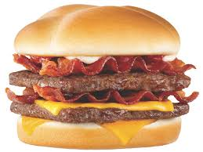
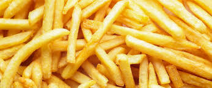
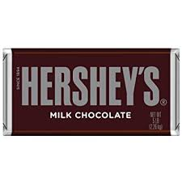
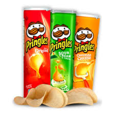
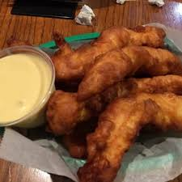
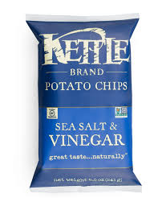
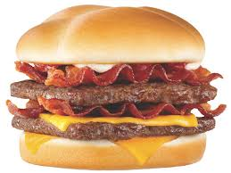
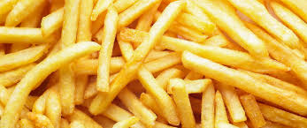
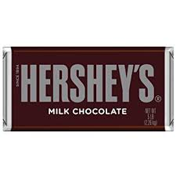
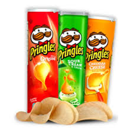
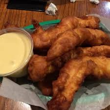
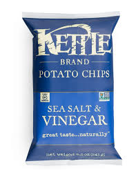
Drinks
I really only drink milk, water, and pink lemonade. If I was forced to pick a favorite soda, it would be Orange Fanta or Sprite.
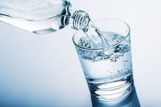
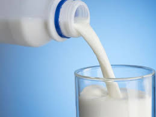
 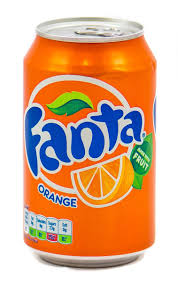
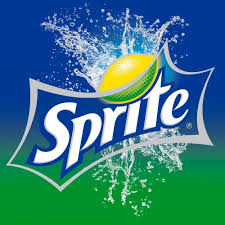
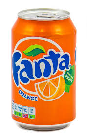
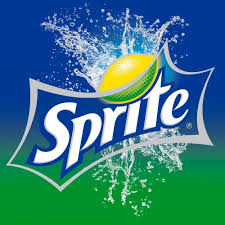